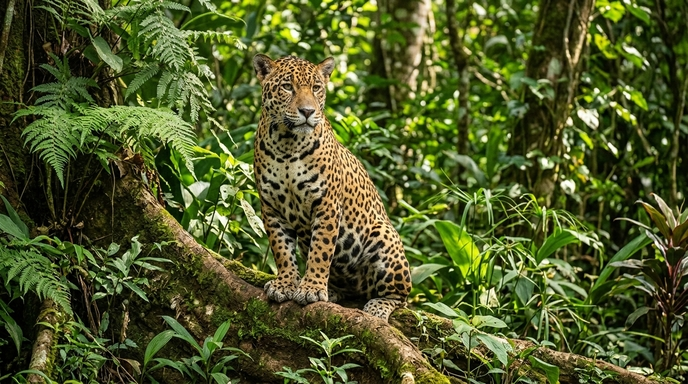
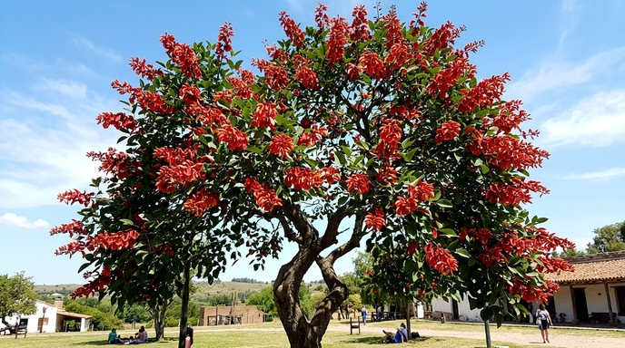

La geografía única de la Argentina, que abarca desde la puna andina y los bosques subtropicales hasta la
estepa patagónica y el mar argentino, da vida a uno de los patrimonios naturales más ricos y diversos
del planeta. Un territorio donde cada ecorregión guarda secretos silvestres fascinantes.
Tesoros Naturales: Flora y Fauna Esenciales
-Gigantes de la Estepa y la Costa: La Patagonia es el refugio emblemático de especies icónicas como
el guanaco, el huemul y el majestuoso cóndor andino en las alturas, mientras que sus costas albergan
imponentes apostaderos de elefantes marinos, lobos marinos y la célebre ballena franca austral.
-El Pulso del Litoral y el Norte: En los esteros y selvas subtropicales conviven el yaguareté —el
gran felino del continente—, el carpincho (el roedor más grande del mundo), yacarés y una colorida
avifauna con más de quinientas especies de aves, como tucanes y loros habladores.
-Bosques Andino-Patagónicos: Sus formaciones boscosas guardan especies nativas únicas y milenarias,
destacándose el imponente alerce (lahuan) y el pehuén o araucaria, que moldean paisajes de cuento de
hadas.
-Una Red de Parques Nacionales: Con más de cuarenta áreas protegidas federales, el país resguarda
ecosistemas vitales que van desde monumentales glaciares hasta sabanas, humedales y selvas de
montaña.
Flora y Faunas Propias de la Argentina
Yaguareté

Yaguareté en su hábitat natural dentro de la selva paranaense
El yaguareté es el felino más grande del continente americano y un símbolo de la biodiversidad
argentina. Declarado Monumento Natural Nacional, este majestuoso predador habita principalmente en
las regiones de la selva misionera, el Gran Chaco y las Yungas. Su pelaje manchado le proporciona un
camuflaje perfecto en la densa vegetación, donde cumple un rol fundamental en la preservación del
equilibrio de los ecosistemas locales.
Flor del Ceibo

Flores rojas e intensas del árbol de ceibo resaltando bajo la luz del sol
La flor del ceibo es la Flor Nacional de Argentina, declarada formalmente en 1942. Crece en un árbol
de porte mediano que habita en las riberas de ríos, lagunas y zonas húmedas de la región del Litoral
y el Noreste argentino. Sus características flores de color rojo carmesí intenso son el centro de
diversas leyendas autóctonas y adornan el paisaje nativo durante los meses de primavera y verano
Cóndor Andino
Cóndor andino planeando majestuosamente sobre las cumbres de la Cordillera de los Andes
El cóndor andino es una de las aves voladoras más grandes del mundo, con una envergadura de alas que
puede superar los tres metros. Habita a lo largo de toda la Cordillera de los Andes, aprovechando
las corrientes térmicas de aire para planear durante horas sin gastar casi energía. Considerado un
ave sagrada por las culturas originarias, desempeña una función ecológica crucial como carroñero en
los ambientes de alta montaña